+3M
de alumnos formados
Programa avalado por:

Más de 80 años formando a profesionales que transforman su futuro.
CEAC es un centro de formación para el empleo con una trayectoria de décadas en las que ha impulsado la carrera profesional de más de tres millones de alumnos.
+3M
de alumnos formados
+80
años de experiencia
+250
docentes en activo
Somos Agencia de Colocación
Autorizada nº 1200000120

Madrid
Pl. Cronos, nº 1, 28037
Cód. centro: 28081169
Barcelona
C. de Salvador Espriu, 38, 08908 L'Hospitalet de Llobregat
Cód. centro: 08078282
Valencia
Avenida de la Ilustración, 4, 46100 Burjassot
Cód. centro: 46037650
Sellos de calidad


El sanitario es un sector que nunca duerme ni para de evolucionar. Hospitales, clínicas públicas y privadas, centros de atención primaria y residencias funcionan porque detrás de cada consulta, cada diagnóstico y cada alta hospitalaria hay alguien que organiza, registra y gestiona con precisión. Y ese alguien puedes ser tú.
Formarte en Documentación y Administración Sanitarias con CEAC significa entrar en un sector con demanda estable y creciente: el envejecimiento de la población, la expansión de la sanidad privada y la digitalización progresiva de los sistemas de salud generan una necesidad constante de profesionales que dominen la gestión clínica y documental. Y, además de lograr la estabilidad, tendrás un trabajo con propósito. Prepárate para lograr una carrera sólida, con sentido real y con futuro garantizado.
Un salario medio de
El gasto sanitario público alcanzó el
Una inversión prevista de
27.000 €
6,4%
230 M€
anuales en el sector
del PIB nacional en 2024
en la digitalización de la Atención Primaria
Si buscas un trabajo con futuro y sientes que tu lugar está en ayudando a las personas, pero tu vocación apunta hacia la organización, la gestión y el orden que hace posible que todo funcione, este curso está diseñado para ti.
Con nuestra formación en Documentación y Administración Sanitarias aprenderás a gestionar historias clínicas con rigor y confidencialidad a codificar diagnósticos y procedimientos según los sistemas internacionales de clasificación de enfermedades, y a manejar los sistemas de información sanitaria que hoy utilizan hospitales y centros de salud de toda España.
También trabajarás la normativa de protección de datos aplicada al entorno clínico —un conocimiento imprescindible en cualquier institución sanitaria—, así como la facturación y los procesos de admisión, gestión de camas y movimientos de pacientes.
En definitiva, aprenderás el lenguaje del sistema sanitario: no el de los diagnósticos, sino el de la organización que los hace posibles. Al terminar, estarás preparado para incorporarte a equipos de admisión y documentación clínica en centros públicos y privados, con las competencias técnicas que demanda un sector en plena transformación digital. La sanidad te necesita: da el paso.

Al terminar tu formación en Documentación y Administración Sanitarias obtendrás dos acreditaciones: el diploma de CEAC y la certificación del Instituto Nebrija de Competencias Profesionales*. Un respaldo que refuerza tu perfil, acredita tus competencias en el sector sanitario y te abre oportunidades en hospitales, clínicas, centros de salud y cualquier organización que requiera una gestión documental y administrativa de calidad.
*Enseñanzas que no conducen a la obtención de un título con valor oficial.

Título propio CEAC
Diploma del Curso de Documentación y Administración Sanitarias expedido por CEAC.

Diploma Nebrija
Aval del Instituto Nebrija de Competencias Profesionales*.
Nuestra formación incluye Licencia Oficial de Office 365 Pro Plus durante dos años. Aprende con los mejores recursos didácticos para controlar las diferentes suites de Microsoft: Word, Excel, Access, PowerPoint y Outlook.
Además, este curso te prepara para conseguir el certificado de Microsoft Office Specialist (MOS) en Word, Excel (dos niveles), Access, PowerPoint y Outlook. Entrénate para los exámenes* de este último reconocimiento con los practice test.
También podrás prepararte para la certificación MOS: Excel Accounting Associate, que acredita competencias en la preparación y análisis de datos contables en Excel, elaboración de balances y estados financieros, y realización de tareas contables habituales. Esta acreditación demuestra un nivel asociado en Excel aplicado a la contabilidad, reforzando tu perfil profesional y tu empleabilidad.
*El alumno tendrá que presentarse por cuenta propia.
Con esta formación de CEAC adquirirás las competencias necesarias para trabajar en la gestión documental y administrativa del sistema sanitario: desde el manejo de historias clínicas y la codificación de diagnósticos hasta la atención al paciente y el uso de sistemas de información clínica, estarás preparado para integrarte en equipos de cualquier centro de salud, hospital o clínica.

El camino que recorrerás como alumno
Te acompañamos a lo largo de todo el proceso, desde el primer día hasta tu salida al mercado laboral.

Todo tu curso, en un único lugar.
Encontrarás todos los recursos de tu formación en un mismo lugar: un campus virtual renovado y en constante actualización que te proporcionará una experiencia de usuario única. Fórmate a través de una plataforma muy intuitiva y visual en la que encontrarás todo tipo de ayudas multimedia para alcanzar tu objetivo.
Avanza de forma progresiva, a tu ritmo, por el apasionante mundo sanitario. Nuestro temario está pensado para que aprendas poco a poco y fijes todos los conceptos sin temor a equivocarte. Explora los diez módulos en los que se estructuran las 1.300 horas lectivas.
Profesora de Formación Profesional apasionada por la enseñanza y el desarrollo de equipos. Con más de 15 años de experiencia, ha trabajado tanto en formación reglada como para empresas. Está especializada en gestión documental, codificación CIE-10-ES y competencias digitales.
Vive la experiencia del
entorno sanitario real.
Además de la formación teórica, podrás realizar prácticas profesionales en empresas colaboradoras para conocer el funcionamiento real de centros sanitarios y adquirir experiencia en gestión de documentación clínica, admisión de pacientes y administración sanitaria.
Tendrás la oportunidad de desenvolverte en un entorno profesional y aplicar todo lo aprendido durante el curso en hospitales, clínicas, centros de salud y otros centros sociosanitarios.
Trabajamos con empresas y colaboradores vinculados al sector sanitario para acercarte al mercado laboral desde el primer día.

Algunas de las empresas con convenio de prácticas
Colaboramos con hoteles, alojamientos turísticos y empresas del sector hospitality en toda España para acercarte a la realidad profesional y ayudarte a dar tus primeros pasos en el mercado laboral.


Accede a oportunidades laborales gracias a nuestro acuerdo con Randstad, empresa líder mundial en recursos humanos y selección de talento.

Te formas, trabajas